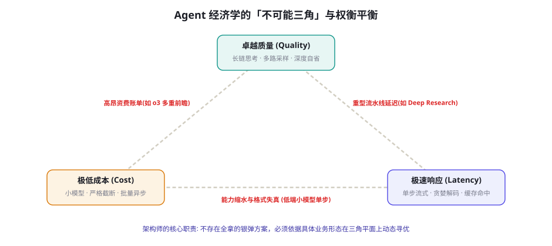
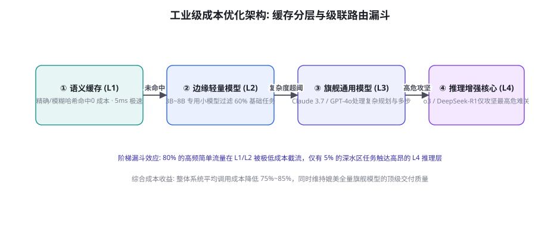

Agent 经济学：成本、延迟与质量的权衡
Demo 与生产系统的分水岭，从来不是「能不能跑通」，而是「账本能不能算过来」。在单次对话时代，调用一次大模型的费用不过几分钱；而在长时程 Agent、多 Agent 协作网络与深度搜索（Deep Research）时代，一次复杂的任务闭环动辄涉及数十次级联调用、数百万 Token 消耗与长达数十分钟的算力占用。如果不懂得精打细算的系统级财务与延迟架构设计，智能体项目将在规模化上线的瞬间被账单吞噬。本章将解构智能体系统的「成本-延迟-质量不可能三角」、多级缓存与级联路由漏斗、离线批处理折扣套利，以及 Token 预算动态分配的精确数学模型。
不可能三角：成本、延迟与质量的根本张力

构建智能体系统时，必须建立理性的第一性财务常识：没有免费的智能，每一次质量跃升都有其明确的物理标价：
① 卓越质量（Quality）的代价：要想让 Agent 克服深水区复杂 Bug 或完成严肃的商业尽调，系统必须引入长链显式思考（Thinking Tokens）、多次蒙特卡洛多路采样（Best-of-N）、复杂的自我校验反思（Reflection）以及精细的工具状态回放。这直接导致单任务消耗的 Token 量以指数级上升（从 2k 飙升至 500k+），既推高了资费账单，又将端到端响应时间从秒级拉长至分钟级。
② 极速响应（Latency）的代价：为了满足在线客服或实时配对编程的亚秒级低延迟要求，系统被迫采用单步贪婪解码、激进的短上下文截断、甚至跳过关键的状态校验与事后重试。这直接导致智能体在复杂推理中的断崖式降智与工具调用格式崩坏。
③ 极低成本（Cost）的代价：一味采用 3B~8B 的超轻量开源小模型或高压缩量化版本，虽然单次调用费用近乎为零，但在涉及多文件跨模块重构、严格 JSON Schema 遵循或长程状态机对齐时，模型的「一次通过率」（Pass@1）极其低下。为了达到同等业务效果，往往需要成倍的人工介入重做，最终由于返工而造成全链路综合成本的隐形暴增。
分层漏斗：多级缓存与级联路由体系

生产级 Agent 降低调用成本的最核心武器，是打破「全链路一刀切使用单一旗舰模型」的粗放设计，构建严密的四级级联路由漏斗（Hierarchical Cascading Funnel）：
| 层级 | 核心机制 | 典型技术栈 | 响应耗时 | 单次成本 | 流量拦截比例 |
|---|---|---|---|---|---|
| L1 语义与精确缓存 | 精确字符串匹配 + 向量相似度语义缓存 (GPTCache) | Redis + 紧凑向量索引 | < 10ms | $0.0000 | 15% ~ 30% |
| L2 领域轻量模型 | 微调专用小模型 (7B~14B) 处理意图识别、参数提取与初筛 | vLLM / 本地私有算力池 | 100ms ~ 300ms | $0.0002 | 40% ~ 50% |
| L3 旗舰通用模型 | 处理多步规划、代码编写、复杂工具编排与长文综合 | Claude 3.7 / GPT-4o | 1s ~ 3s | $0.01 ~ $0.05 | 20% ~ 25% |
| L4 推理增强核心 | 专职攻坚高危操作校验、数学证明与极端复杂逻辑链 | OpenAI o3 / DeepSeek-R1 | 10s ~ 60s | $0.10 ~ $1.00+ | < 5% |
2024 年末各大主流模型供应商（Anthropic、OpenAI、DeepSeek）普遍上线了提示词前缀缓存技术（Prompt Caching）。对于长时程 Agent 而言，这一技术带来了革命性的账本重构。其核心物理原理在于：当连续多次 API 调用的前序 Token 完全一致（例如包含长达 30k 的系统指令、工具定义 Schema、项目仓库结构地图与核心代码头文件）时，推理引擎无需重复计算这部分前缀的 KV 缓存（KV Cache），直接从显存中加载计算结果。各大厂商对此普遍给出了 75%~90% 的写入与命中折扣。架构师必须遵循「静态稳定前缀置顶、动态高频变量沉底」的编排纪律：将绝不改变的基础规范和工具列表严格排布在 Prompt 最前段，将每步变化的当前时间戳和用户即时输入置于最后。一个简单的提示词重排动作，能在长程会话中为团队直接省下数万美元的现金消耗。
全链路细粒度成本归因与单元经济学模型
传统的云原生成本监控通常按服务器集群或 API 密钥粗粒度汇总，但在复杂的智能体系统中，这种粗放账本会导致「财务黑盒」：你只知道这个月花掉了 5 万美元，却根本说不清究竟是哪一个功能模块、哪一类客户群体或哪一个失控的递归死循环吃掉了大部分预算。生产级系统必须建立「按请求全链路细粒度成本穿透归因」体系：
第一步：多维度元数据标签注入（Metadata Tagging）。在每一次向模型网关下发请求时，强制在请求头或 Payload 中透传业务上下文三元组：tenant_id（租户或业务线标识）、feature_tag（功能标签，如 code_review, doc_search, deep_research）以及 task_trace_id（全局任务链路唯一 ID）。这些元数据随请求被网关原子化捕获，作为后续计费与分摊的唯一法定凭据。
第二步：非模型算力综合开销分摊（Blended Unit Economics）。智能体的真实成本绝不仅仅是大模型 API 的 Token 标价！一个完整的任务执行闭环还包括：① 沙箱与虚拟化成本（Docker 容器 CPU/内存配额每小时租金）；② 第三方外部 API 调用费（商业搜索 API 每千次查询 $5、专业数据库检索费、验证码代理解析费）；③ 网络与存储流量（高清屏幕截图对象存储存储费、跨区域网络出站流量费）。将这些周边开销乘以损耗系数，结合模型 Token 资费，才能精准计算出「端到端单次任务全口径成本（True Unit Cost）」。
第三步：异常成本尖峰的主动归因算法。当某租户的日均开销突然偏离正常基线 3 倍以上时，系统自动启动归因分析下钻：统计是输入 Token 膨胀（用户上传了异常超大附件？）、输出步数膨胀（智能体在工具调用错误中陷入死循环重试？）、还是模型路由层发生降级失效（原本该被 L2 小模型拦截的流量全部被误判放行到了 L4 旗舰推理层？）。通过将成本数据与第 79 章的可观测性 Tracing 深度挂钩，财务问题得以在分钟级内定位到具体代码行与配置漂移。
批处理折扣与异步时间套利
大模型服务商的算力负载呈现出极其剧烈的昼夜潮汐特征：在工作时间，在线并发请求极度拥挤；而在深夜与周末，海量高性能 GPU 处于严重闲置状态。几乎所有主流供应商均上线了批量处理 API（Batch API，如 OpenAI Batch、Anthropic Batch），承诺在 24 小时内完成异步交付，并为此提供全量 50% 的直接价格腰斩：
智能体业务的「时间敏锐度分流」法则：
① 在线同步链路（实时性要求 < 5 秒）：面向最终用户交互的直接问答、在线调试对话。走标准即时通道，严格支付全额价格并优化首包延迟。
② 离线半同步链路（容忍度 10 分钟 ~ 1 小时）：Deep Research 深度研报生成、端到端复杂代码重构 PR 编写。可利用优先级排队机制，错峰调度至算力低谷区间。
③ 完全异步夜间链路（容忍度 12 ~ 24 小时）：代码库夜间自动化静态漏洞扫描自愈（第 74 章）、评测集全量回归验证（第 56 章）、合成数据自清洗与微调样本生成（第 47 章）。这一类占据企业全量 Token 消耗 60% 以上的重型任务，必须强制 100% 路由至 Batch API 流水线。仅凭这一项架构策略，就能让企业的月度总算力账单原地减半。
服务等级协议（SLA）与多租户动态降级策略
在多租户 SaaS 或高并发内部平台中，算力资源与供应商并发配额永远是有限的。当早高峰流量暴增或外部模型服务商发生限流（Rate Limit HTTP 429）时，系统不能直接抛出异常崩溃，而必须依据严格的服务等级协议（SLA）实施动态降级调度：
第一级梯队：高价值企业租户（VIP Tier）。保证 100% 独享的并发配额池与最高优先级排队权限。在模型选型上严格锁定 L3/L4 旗舰模型，全量启用复杂工具链与多路校验，不惜成本保障交付质量与极速响应。
第二级梯队：标准业务流量（Standard Tier）。在正常负载下走标准分层路由漏斗；当系统整体负载超过 70% 警告水位线时，自动收敛其非核心功能：例如将深度规划搜索（Tree Search）的分支宽度由 5 裁剪为 2，将允许的最大反思纠错轮次从 6 次压减至 3 次，优先保证任务按期完成，牺牲边际质量换取吞吐稳定性。
第三级梯队：免费或长尾低价值任务（Free / Best-Effort Tier）。当发生全系统级算力告急或外部 API 严重限流时，该层级流量触发硬性策略降级：① 强行切换为自托管开源轻量模型或高压缩量化版本；② 将同步等待转换为异步后台作业队列（走 24 小时 Batch 离线通道）；③ 弹出温和的排队提示（「当前系统负载过高，已为您进入低功耗处理模式」）。这种基于商业价值的分级降水闸门，是保护企业核心业务免受雪崩冲击的生命线。
Token 预算动态分配的数学模型
在长时程或多任务智能体中，不能任由模型随心所欲地消耗资源，必须建立严密的动态预算分配机制（Dynamic Budget Allocation）。设某复杂任务被拆解为包含 $N$ 个节点的有向无环图（DAG），整个任务的硬性资费预算上限为 $B_{\max}$（例如不超过 2 美元），期望步数限制为 $S_{\max}$。当前步骤 $k$ 的动态可用预算 $b_k$ 可由以下自适应衰减公式约束：
$$b_k = \min\left( \frac{B_{\text{remaining}}}{S_{\max} - k + 1} \times \omega(\text{type}_k, \text{risk}_k), \quad B_{\text{step\_cap}} \right)$$
其中，$B_{\text{remaining}}$ 为当前剩余的全局可用资金；$\omega(\text{type}_k, \text{risk}_k)$ 为当前子任务的权重乘子：对于低危的只读查询（L0 级，第 60 章），乘子取 $\omega = 0.4$（强制采用小模型与严格截断）；对于涉及核心代码重构或高危写操作（L2/L3 级），乘子取 $\omega = 2.5$（允许调用重型推理模型与多路前瞻验证）；$B_{\text{step\_cap}}$ 为单步物理熔断上限。当 $B_{\text{remaining}}$ 跌破安全阈值（例如仅剩 15%）时，引擎强制将所有后续分支的规划策略降级为「极简安全交付模式」，拒绝一切发散性探索并迅速生成当前最优折衷报告收尾，杜绝由于单任务失控引发的灾难性账单穿透。
生产级智能体系统的第一安全准则不是防火墙，而是财务熔断器（Financial Circuit Breaker）。最佳工程实践是在 API 网关层配置两级不可绕过的额度防线：① 软阈值（Soft Limit）：单任务消耗达到 $0.5 时，系统自动在上下文注入警示标记（「当前资源已消耗 50%，请收敛探索路径，聚焦最终产出」），提示模型主动克制无意义的展开；② 硬熔断（Hard Kill-Switch）：单任务消耗达到预定上限（如 $2.0）时，网关物理切断模型生成流，直接向编排器注入强制终止事件（ABORT_BUDGET_EXCEEDED），触发状态机保存已有成果并向用户退款或告警。没有财务硬熔断的 Agent 裸奔上线，等同于在公网上留下了无限透支的空白支票。
智能体生命周期全成本模型与自建/采购决策树
企业在规划智能体架构时，常常陷入「自建私有开源大模型服务」与「直接采购商用闭源 API」的激烈争论。这绝不是一个非黑即白的站队问题，而是一个严格的量化盈亏平衡点（Breakeven Point）计算工程：
全生命周期总拥有成本（TCO, Total Cost of Ownership）算式：
$$ ext{TCO}_{ ext{Self-Host}} = C_{ ext{Hardware}} + C_{ ext{Data\_Prep}} + C_{ ext{Training}} + C_{ ext{Serving\_Infra}} + C_{ ext{Ops\_FTE}}$$
$$ ext{TCO}_{ ext{Commercial\_API}} = \sum ( ext{Tokens}_{ ext{Input}} imes P_{ ext{in}} + ext{Tokens}_{ ext{Output}} imes P_{ ext{out}}) + C_{ ext{Integration\_FTE}}$$
其中自建方案包含极其沉重的固定前期沉没成本：高性能计算卡（如 H100/A100）的采购或长期租约费用、训练集群网络拓扑（RDMA/InfiniBand）搭建开销、微调与蒸馏实验的算力消耗、以及至少 2-3 名高薪全职算法与运维工程师（FTE）的人力成本。相比之下，商用 API 方案呈现出极低的前期启动门槛与几乎完全随业务量线性浮动的可变成本特征。
工程决策树法则（Decision Framework）：
① 低频/起步阶段（月 Token 消耗 < 5 亿）：毫无悬念 100% 采购商业闭源 API（配合 Prompt Caching 与 Batch 折扣）。此时自建集群的单次推理真实分摊成本甚至高出商用 API 数倍，过早重资产自建无异于财务自杀。
② 规模放量阶段（月 Token 消耗 5 亿 ~ 30 亿）：启动「混合舰队」架构（第 48 章）。将占据总流量 70% 的低风险、高频基础任务（如意图分发、格式转换、简单文本抽取）下沉至自托管的开源 7B~14B 轻量模型集群；而将剩下 30% 涉及深水区规划、复杂代码生成与逻辑攻坚的任务保留在商用旗舰 API 上。这既避免了全量自建的技术风险，又迅速将总体账单砍去大半。
③ 超大规模/极度隐私敏感阶段（月 Token 消耗 > 30 亿 或 军工/金融核心机密）：此时固定资产折旧与全职运维团队的人力开销已经被庞大的业务吞吐量充分摊薄，单 Token 自建推理成本开始显著低于商业零售价格。此时全面推进私有化算力建设与领域模型自研蒸馏，方能真正构筑起长期的商业成本护城河。
多级模型路由器与自适应预算控制器实现
下面给出一段生产级模型路由器与动态成本控制器的核心实现代码，展示漏斗调度与前缀缓存优化的工程形态：
import hashlib
class AdaptiveCostRouter:
def __init__(self, budget_limit: float):
self.total_budget = budget_limit
self.spent = 0.0
self.cache = {} # 内存精确缓存
def get_prompt_hash(self, prompt: str) -> str:
return hashlib.sha256(prompt.strip().encode("utf-8")).hexdigest()
def route_request(self, task_type: str, risk_level: int, prompt: str, max_tokens: int) -> dict:
"""根据分层漏斗执行动态路由决策"""
p_hash = self.get_prompt_hash(prompt)
# 1. 检查 L1 精确缓存 (零成本)
if p_hash in self.cache:
return {"model": "CACHE", "response": self.cache[p_hash], "cost": 0.0}
# 2. 检查财务熔断
remaining_budget = self.total_budget - self.spent
if remaining_budget <= 0.05: # 仅剩极少预算，强制降级
selected_model = "small-fast-model"
rate = 0.0002 / 1000
elif risk_level >= 3 or task_type == "ARCH_DESIGN":
# 高危复杂任务触达 L4 推理增强集群
selected_model = "reasoning-o3-deep"
rate = 0.06 / 1000
elif task_type in ["CODE_EDIT", "DEEP_PLAN"]:
# 核心工程任务路由至 L3 旗舰通用模型
selected_model = "claude-3-7-flagship"
rate = 0.015 / 1000
else:
# 大量基础常规任务由 L2 紧凑小模型消化
selected_model = "small-fast-model"
rate = 0.0002 / 1000
est_cost = max_tokens * rate
return {
"model": selected_model,
"estimated_cost": est_cost,
"prompt_caching_eligible": len(prompt) > 2048, # 提示词前缀大于2k标记开启缓存优化
"remaining_budget": remaining_budget
}
def record_actual_spend(self, actual_cost: float, p_hash: str = None, response: str = None):
"""记账更新并回填缓存"""
self.spent += actual_cost
if p_hash and response and actual_cost > 0:
self.cache[p_hash] = response
print(f"[财务追踪] 本次花费: ${actual_cost:.4f} | 累计已用: ${self.spent:.4f} / ${self.total_budget:.2f}")上述代码直观呈现了现代 Agent 运行时的「财务敏感型调度」：它在分发任何模型请求之前，首先在 L1 缓存层进行零开销拦截；在不得不调用大模型时，依据任务风险等级与剩余预算动态决算到底该派出「廉价短跑小模型」还是「昂贵重装推理引擎」，并在提示词达到阈值时显式启用前缀缓存优化，从而在软件层面构筑起自适应的成本护城河。
补充一个极具实战指导价值的细节法则：针对流式输出与首字延迟（TTFT）的用户心理学对冲。在面向最终用户的交互式智能体产品中，端到端完整完成耗时（E2E Latency）往往并不决定留存率，真正决定用户对系统「快与慢」主观评价的，是首字返回延迟（Time-To-First-Token, TTFT）与视觉占位反馈。如果系统在后台执行了 5 秒钟的静默深度规划，用户会误以为程序崩溃或卡死而愤怒刷新；但如果系统在 300 毫秒内通过流式吐出思考骨架（「正在定位相关模块...」并伴随思考折叠气泡），用户就会感知到系统正在高智商运转。架构上应将「思考状态流」与「最终内容流」解耦并发输出，利用心理学上的「被倾听确认感」有效对冲深度执行带来的不可避免的物理延迟。
再补足一个工程财务常识：跨区域数据合规与汇率波动的隐藏资费防护。很多企业在测算模型资费时只看了美元标价，却忽视了跨境调用产生的高昂专线网络出站费（Egress Traffic Costs）、国际汇率结算滑点以及增值税法务扣税。在长时程多模态数据传输中（例如传输数十张 4K 截图，第 75 章），网络流量账单有时甚至能够占到单次任务总开销的 20% 以上。生产级多云部署架构应当在路由器层面集成实时汇率换算与就近边缘节点调度，优先消费本地私有网关或国内合规部署节点，切断由于隐蔽外网路由导致的盲目财务跑冒滴漏。
三个高频疑问
Q：对于中小团队而言，自建模型路由与复杂分层架构的工程投入，是否会反过来抵消它省下的 API 费用？必须算清两笔账。如果你的系统处于早期探索阶段，每日总请求量不足千次，全量使用单一旗舰模型无疑是最敏捷的选择，过早优化架构属于研发浪费；但一旦你的智能体服务进入生产放量阶段，每日 Token 消耗突破上亿级别（月度开销跨过数万美元门槛），分层路由与缓存体系的研发投入（通常仅需 1~2 人周工程时间）将在上线后第一个月内完全回本。更深远的价值在于：自建路由层使系统具备了「供应商多活与议价能力」，团队不再被某一家厂商的限流或涨价政策卡死命脉。
Q：在长时程多轮任务中，频繁进行上下文压缩与摘要折叠，是否会反过来导致额外的 LLM 调用费用飙升？如果设计不当确实会发生这种「按下葫芦浮起瓢」的悲剧。防御此现象的关键是「分层折叠与懒惰触发机制」（Lazy Compaction）：绝不要每走一步就调用一次大模型去重写摘要！必须设置合理的累积阈值（例如仅当新增历史消耗达到窗口容量的 30% 时才触发一次折叠）；并且，负责执行压缩提炼的永远应该是参数量小一个数量级的廉价专用摘要模型（如 7B 级蒸馏小模型，第 48 章），绝不派出昂贵的旗舰推理模型来干文本提炼这种脏活。用小模型的微量开销去换取主干上下文数十轮的巨幅缩减，其财务杠杆永远是呈数十倍正向收益的。
Q：如何向非技术业务方或管理层汇报 Agent 项目的 ROI 与经济效益？千万不要汇报「我们本月调用了 10 亿 Token」或「平均准确率提升了 5%」这种技术术语。业务方真正听得懂的财务指标只有三个：① 单位业务产出的边际成本（Cost per Resolved Unit）：例如「成功修复并交付一个合规 Bug 的平均算力成本从 $12 降至 $2.3」；② 人效替代杠杆比（FTE Multiplier）：例如「以 1 名高级工程师监督 10 个自主 Agent，团队月度有效交付工单量相当于传统 5 人团队全职产出」；③ 端到端完成周期（Turnaround Time MTTR）：原本需要跨团队流转两天的复杂调研，缩短至 20 分钟内半自动完成。用「商业单位成本的断代级降低」来汇报，是赢得长期工程预算的唯一正确路径。
本章在全书网络中的连接：上游全面承接第 12 章（推理与量化成本结构）、第 26 章（上下文工程与 Token 压榨）以及第 32 章（模型级联与动态路由算法）；横向贯穿第 73 章（Deep Research）与第 76 章（长时程任务）的开销底座；下游直接通向第 79 章（可观测性与 Tracing 监控）与第 80 章（大规模系统并发与队列工程）。复习锚点：不可能三角平衡图（78-1）、四级级联路由漏斗表（表 78-1）、Prompt Caching 前缀缓存原则、Batch API 离线套利法则、动态 Token 预算衰减公式、财务双熔断机制。
本章收尾，把 Agent 经济学的终极哲学做一次体系化提炼：智能体的商业化成熟，本质上是一场将「未受约束的算力奇迹」改造为「受控且有利可图的工业流水线」的工程理性回归。一个卓越的架构师不仅能在技术白皮书上画出天马行空的多智能体协作图，更能用最少量的 Token、最短的时延与最严密的财务熔断，为企业构筑起经得起商业周期检验的高可用数字基建。下一章我们将转向智能体系统的神圣神经中枢——可观测性（Observability）：从 OpenTelemetry GenAI 语义规范，到 LangSmith / Langfuse 链路追踪实战，探索如何将黑盒运行的智能体每一次微小的决策、工具调用与性能瓶颈彻底透明化呈现。
本章小结
- Agent 经济学的不可能三角：质量、延迟与成本三者不可兼得，架构师必须依据具体业务容忍度实施动态权衡。
- 多级缓存与级联路由漏斗（L1 缓存 → L2 轻量过滤 → L3 旗舰主力 → L4 深度攻坚）是综合降本 75%+ 的核心武器。
- 提示词前缀缓存（Prompt Caching）是一场工业红利，严格遵守「静态稳定前缀置顶、动态变量沉底」的编排纪律。
- Batch API 离线时间套利：将夜间回归、代码自愈和大规模合成等非即时任务 100% 切换至异步批量，原地锁定 50% 价格折扣。
- 建立严密的动态预算衰减公式，并在网关层配置不可绕过的软硬财务双熔断器，杜绝无限透支风险。
自测题
- 画出你团队当前业务场景在「成本-延迟-质量」不可能三角中的取向点：为了当前的目标，你主动牺牲了哪一个维度？这种牺牲是否合理？
- 审查你系统的提示词构建顺序：是否存在把动态时间戳或随机 ID 放在最前段从而彻底破坏 Prompt Caching 命中率的反模式？应该如何重排？
- 计算一个实际场景的账本：假设一个包含 30 步交互的 Coding 任务，分别计算「全量无缓存裸调旗舰模型」与「采用前缀缓存 + L2 路由过滤」的理论开销差距。
- 设计一个针对生产级 Agent 的「软硬财务熔断策略」：分别在何时记录告警？何时通知模型收敛？何时物理切断执行流？
参考文献与延伸阅读
- Chen, L. et al. (2023). FrugalGPT: How to Use Large Language Models While Reducing Cost and Improving Performance. arXiv:2305.05176（级联路由思想的开山经典）
- Anthropic (2024). Prompt Caching Documentation and Pricing Guidelines. docs.anthropic.com
- OpenAI (2024). OpenAI Batch API Guide: Asynchronous Processing at Half Price. platform.openai.com
- DeepSeek (2025). DeepSeek-V3 Technical Report: Economic Multi-Head Latent Attention and Context Optimization. arXiv:2412.19437
- Zheng, L. et al. (2023). Efficient Memory Management for Large Language Model Serving with PagedAttention (vLLM). arXiv:2309.06180
- GPTCache Project (2023-2024). Semantic Cache for LLMs to Reduce Latency and API Cost. github.com/zilliztech/GPTCache